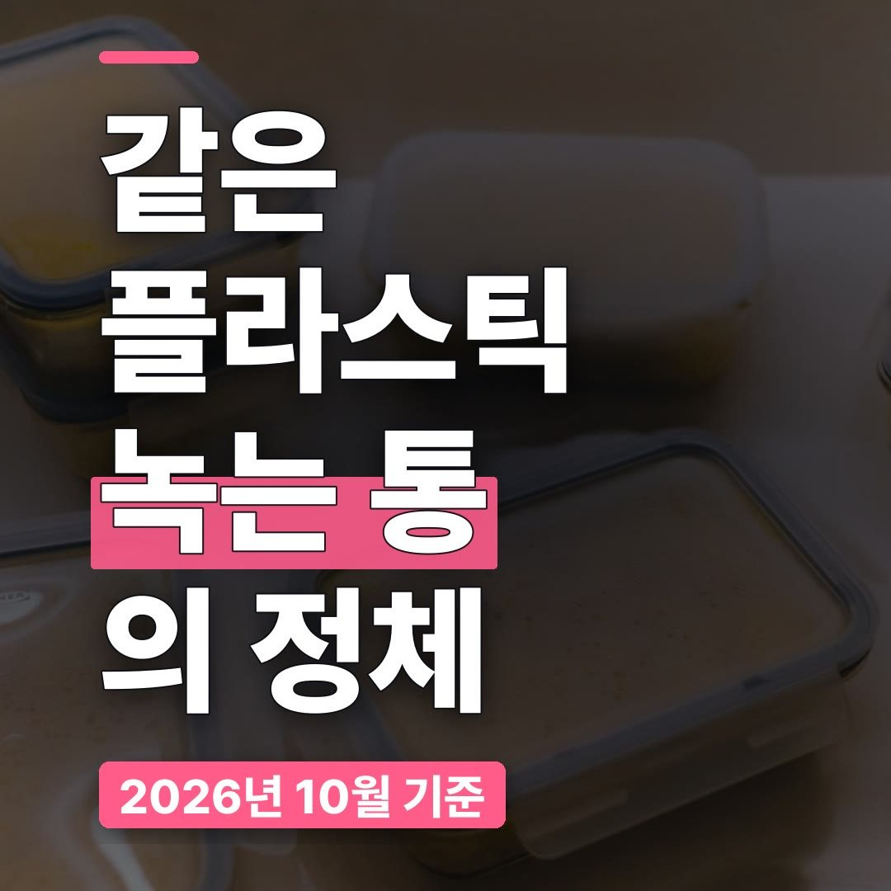
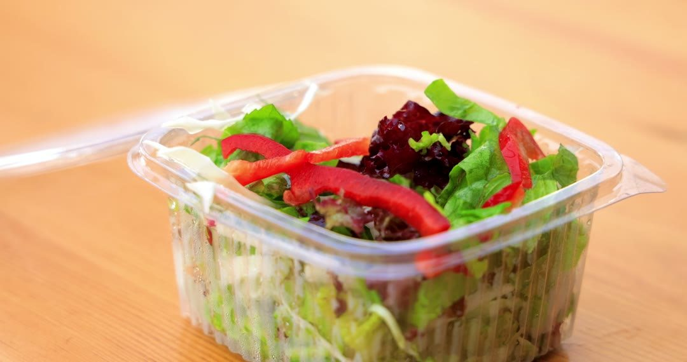
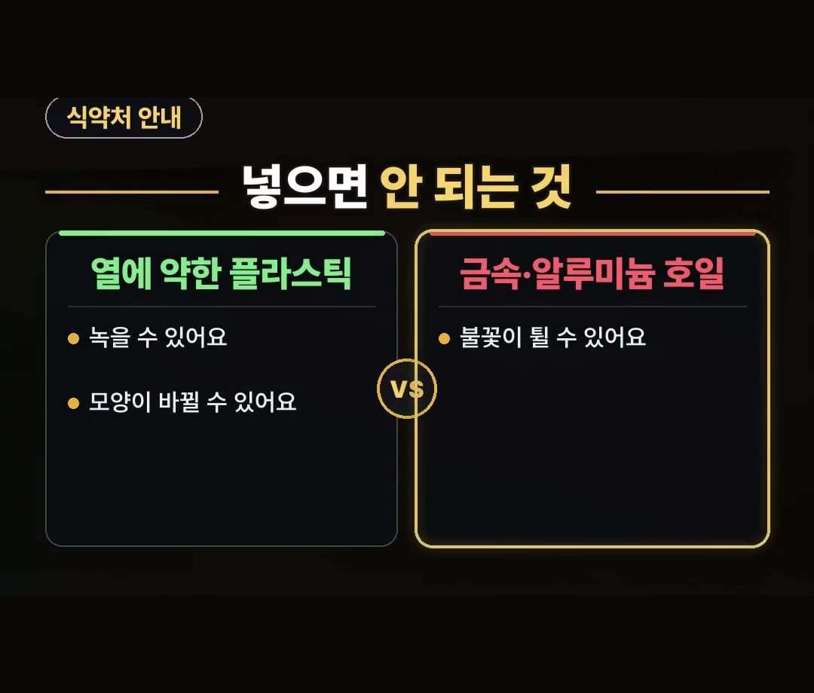
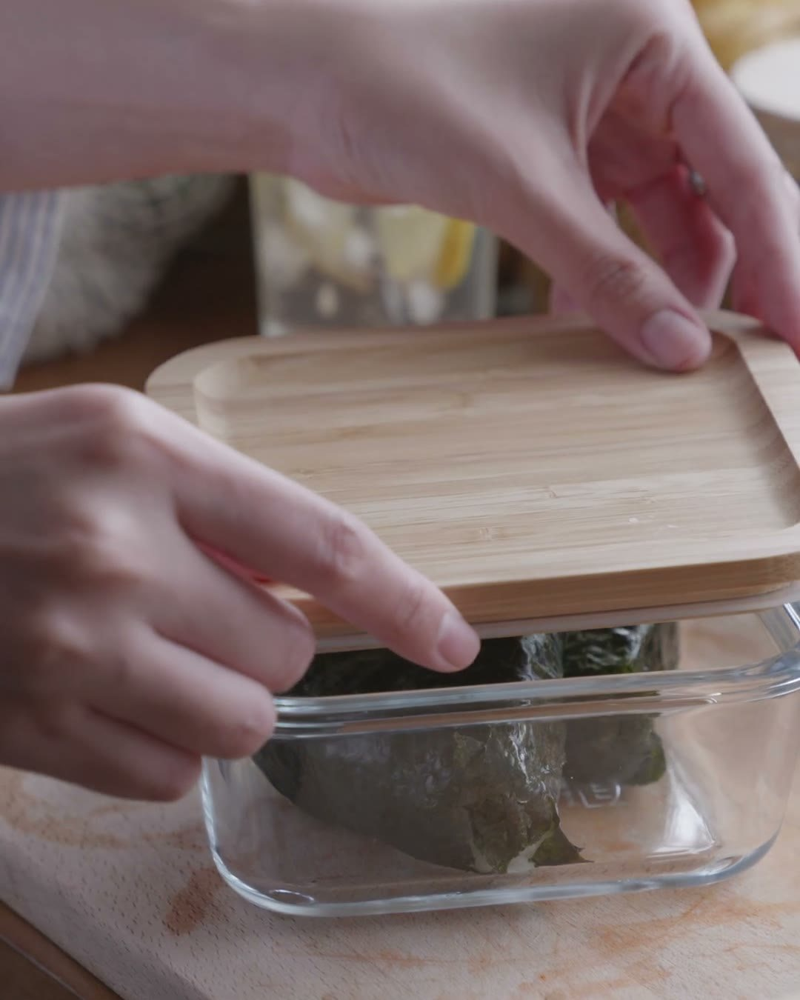
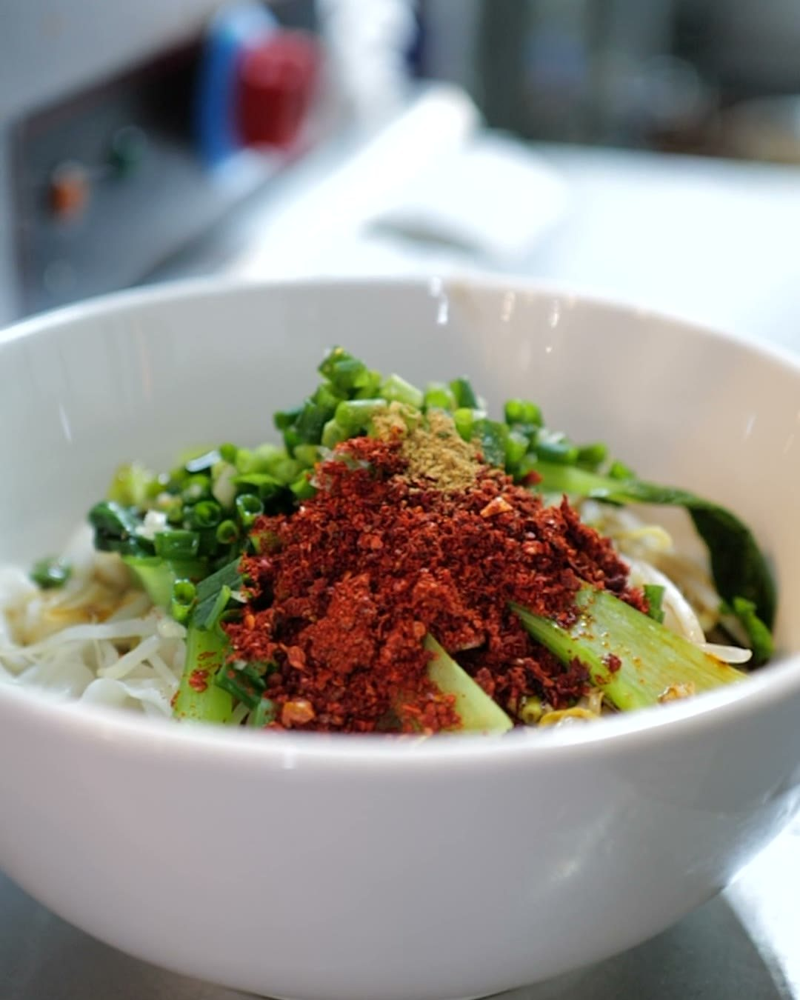

전자레인지 용기, 같은 플라스틱인데 녹는 통이 따로 있는 이유
※ 이 글에는 제휴 링크가 포함되어 있으며, 링크를 통해 구매하시면 일정 수수료를 받을 수 있습니다. (가격은 같습니다)
※ 이 포스팅은 쿠팡 파트너스 활동의 일환으로, 이에 따른 일정액의 수수료를 제공받습니다.
※ 이 콘텐츠는 토스쇼핑 쉐어링크 활동의 일환으로, 링크를 통한 구매가 발생하면 일정 수수료를 지급받습니다.
퇴근길에 배가 고파 냉장고 속 반찬통을 그대로 전자레인지에 넣었는데, 꺼내 보니 뚜껑이 살짝 휘어 있는 상황을 떠올려 보세요.
겉보기엔 똑같은 플라스틱 통인데 어떤 건 멀쩡하고 어떤 건 모양이 바뀌는 데는 이유가 있어요.
이 글에서는 식약처 안내를 바탕으로 전자레인지 용기를 살 때 볼 3가지와 데우는 순서를 정리했어요.
같은 재질로 만든 통이라도 만드는 방법에 따라 열에 버티는 힘이 다를 수 있다는 게 식약처 안내예요.
그래서 살 땐 포장의 「전자레인지용」 표시부터 확인하세요! 🍱

같은 플라스틱인데 왜 결과가 다를까요
반찬통째 데우다 뚜껑이 휜 적, 한 번쯤 있으시죠?
식약처 안내를 보면 같은 재질로 만든 용기라도 만드는 방법에 따라 열에 버티는 힘이 다를 수 있다고 해요.
그래서 겉모습이 비슷한 플라스틱 통이라도 전자레인지에 넣었을 때 결과가 달라질 수 있습니다.
결국 이 통을 전자레인지에 써도 되는지는 겉모습보다 포장 표시로 확인하는 게 먼저예요.
식약처 안내도 전자레인지용 표시를 보고 고르라고 하고 있어요.

전자레인지에 넣으면 안 되는 것
식약처 안내에 따르면 데우기 전에 걸러야 할 것이 두 가지 있어요.
- 열에 약한 플라스틱 통: 녹거나 모양이 바뀔 수 있어요
- 금속 통·알루미늄 호일: 불꽃이 튈 수 있어요
같은 「통」 이라도 재질과 만든 방법에 따라 이렇게 달라요.
집에 있는 통을 넣기 전에 포장이나 바닥의 표시를 한 번 살펴보세요.

전자레인지 용기 추천 글 보기 전에, 살 때 볼 3가지
전자레인지 용기 추천 글을 찾아보기 전에 고를 때 볼 점 3가지를 먼저 정리했습니다.
- 포장의 「전자레인지용」 표시
- 데울 양에 맞는 용량
- 뚜껑
첫째 표시는 식약처 안내에도 나오는 부분이에요.
전자레인지 용기 유리 제품을 알아보실 때도 마찬가지로, 재질 이름보다 포장의 전자레인지용 표시를 먼저 확인해 보세요.
용량은 집에서 주로 무엇을 데우는지에 따라 달라지고, 뚜껑은 아래 데우는 순서와 이어지니 같이 봐 두시면 좋아요.
데우는 순서, 뚜껑은 조금 열고
꽉 닫히는 통은 뚜껑을 조금 열고 데우고, 꺼낼 땐 장갑을 끼라는 게 식약처 안내예요.
순서로 정리하면 이렇습니다.
- 1단계: 뚜껑을 조금 열기
- 2단계: 데우기
- 3단계: 장갑 끼고 꺼내기
뚜껑을 꽉 닫은 채로 데우지 말고 살짝만 열어 두는 것, 그리고 꺼낼 때 맨손 대신 장갑을 쓰는 것 두 가지만 기억해 두세요.

이런 집이면 큰 통은 사지 마세요
용량은 데울 양부터 생각하는 게 순서예요.
- 라면이나 국을 자주 데우는 집: 넉넉한 용량이 맞아요
- 밥 한 공기만 데우는 집: 큰 통은 사지 마세요
데울 양이 적은데 큰 통을 사 두면 쓰임새가 애매해질 수 있으니, 집에서 가장 자주 데우는 음식을 먼저 떠올려 보세요.
이런 제품도 있어요.
상품 설명에 따르면 1리터짜리 전자레인지 라면 용기 4개 묶음이라고 합니다.
라면이나 국을 자주 데우는 집이라면 위에서 정리한 전자레인지용 표시, 용량, 뚜껑을 상품 설명에서 하나씩 확인해 보세요.

정리
- 같은 재질로 만든 통도 만드는 방법에 따라 열에 버티는 힘이 다를 수 있어, 식약처 안내는 전자레인지용 표시를 보고 고르라고 해요.
- 열에 약한 플라스틱은 녹거나 모양이 바뀔 수 있고, 금속 통·알루미늄 호일은 불꽃이 튈 수 있어요.
- 전자레인지 용기는 표시·용량·뚜껑을 보고 고르고, 데울 땐 뚜껑을 조금 열고 꺼낼 땐 장갑을 끼세요.
여러분은 전자레인지로 밥을 더 자주 데우시나요, 라면이나 국을 더 자주 데우시나요?
링크는 아래에 모아 두었어요.
📌 2026년 10월 기준 정보예요. 가격은 시기에 따라 달라질 수 있어요.
· 식품안전나라 「전자레인지 전용 식품용기, 바로 알고 사용해요!」 (2020.12.08)
· 대한민국 정책브리핑 카드뉴스 「전자레인지 전용 식품용기, 바로 알고 사용해요!」 (2020.05.19 · 식품의약품안전처)
사진·영상사진·영상: Pexels (Engin Akyurt, Kate Trifo, Liliana Drew, Nataliya Vaitkevich, RDNE Stock project, Ron Lach)